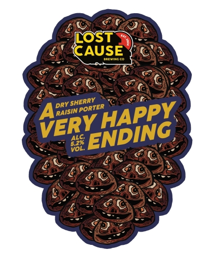

A Very Happy Ending
5.2%Dry Sherry & Raisin Porter
This one is made for a night by the fire
There's something rather lovely about settling into your favourite pub, finding a spot by the fire and enjoying a proper winter warmer. This one is perfect for that.
A Very Happy Ending is our 5.2% Dry Sherry & Raisin Porter, packed with rich dark molasses and spiced raisins on the nose, followed by a warming hint of sherry.
A little caramel and toasted malt bring some extra depth, with just enough of that festive fruit cake richness to keep things interesting.
Ending with a lovely dry finish that keeps everything balanced and makes it all too easy to go back for another.